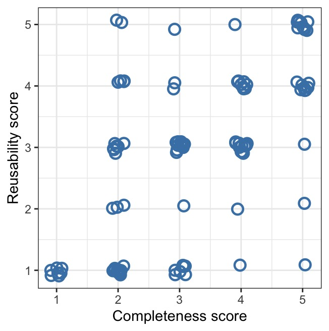
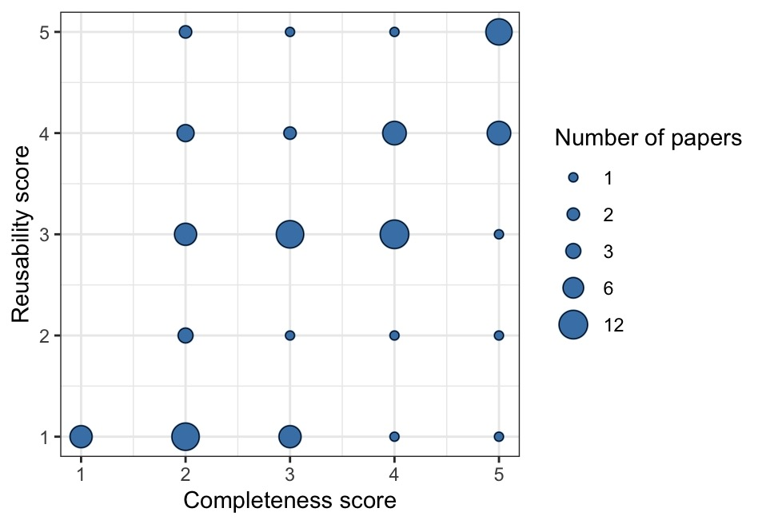
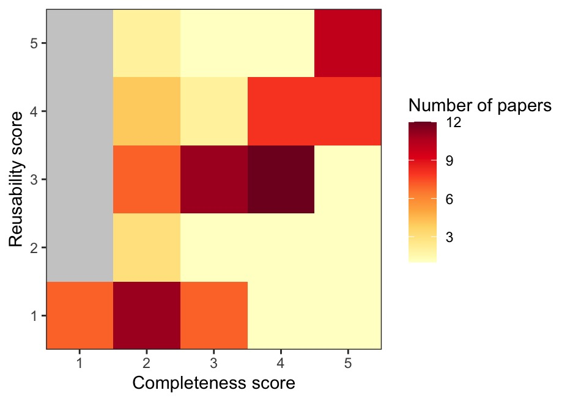

library(tidyverse)
library(gridExtra)
library(gapminder)BIOL 5404 Assignment 4
Instructions
- Create a new .R script to complete this assignment in your local assignments folder for this course.
- You’ll submit the .R script on Brightspace.
- Put your FIRST and LAST NAME in the file name of the script.
- Put your name at the top of the script as well.
- Please do not include your student ID, just your name is enough.
- Show your work!
- Make sure your script is organized and legible.
- Use code sections (####) & question numbers as outlined below.
- Provide all written answers as brief # comments within your script.
- Be sure to load all packages needed at the top of your script, like this (adding any other packages needed):
In this assignment, we will use a few different datasets:
We will work on graphing data from Roche et al. on completeness and reusability scores for publicly archived data (we’ll remake their Figure 3).
We will use a dataset on population sizes of ancient cities throughout history, from 3700 BC to 2000 AD, by Modelski. We will need to do some cleaning/quality control, some wrangling, and then we’ll practice visualizing aspects of this dataset.
In the optional challenge at the end, we will use the gapminder dataset from the
gapminderpackage to integrate continent names with Modelski’s city data (you will need to install the gapminder package to do this optional section, if you don’t have it already).
Part 1
Let’s start by plotting the data from Roche et al.’s study of data archiving. First, read in the data from the csv file Dryad_data_2012_2013.csv
1a. Use ggplot to re-create (as closely as you can!) their scatterplot from Figure 3 below showing the relationship between reusability score (y-axis) and completeness score (x-axis). Your graph should copy the features of Figure 3 as much as possible. Note, their graph uses position = position_jitter(), and you should too, but you won’t be able to replicate the exact positioning of the randomly jittered points.

1b. Now, use ggplot to re-draw their Figure 3 as a different type of graph where there is only one dot/point per score combination, and where the AREA size of each dot represents the number of papers with that combination of scores. See the example below to see what I mean. In your plot, include a legend so readers can interpret the area sizes.
Hint: geom_count() is a shortcut to do this. You can also do this if you group_by() complScore AND reuseScore, then make a new dataframe that counts up the occurrence of each unique score combination, then use that new df for your graph.

1c. Now, use ggplot to re-draw their Figure 3 as a heatmap, where the colour of each cell represents the number of papers with that combination of scores. Use a scale of two colours (e.g, yellow –> red, or choose your own color scale) to represent values from 1 to the max number of papers per cell. See the example below to see what I mean.
Hint: as above, a good way to do this is group_by complScore and reuseScore, then make a new df that counts up the occurrence of each unique score combination. Then, take that df of counts and use that to draw your heatmap.

1d. Finally, use grid.arrange() from the gridExtra package to make a layout that shows ALL three of your candidate plots on a single “page”. Which do you prefer?
OPTIONAL: Use grey to fill in the cells of your heatmap that have 0 papers represented. Remove the extra “padding” around the coloured cells so that the border of the plot just includes the coloured areas. See my example above to see what I mean.
Part 2
Now, let’s take a look at Modelski’s data on ancient cities throughout history. There are two csv files on Brightspace, modelskiAncientV2.csv and modelskiModernV2.csv. Download them and read them into the R environment.
.jpg){kind=link}
Background: one of the first steps when cleaning up a new dataset (data hygiene) is to sit down and think through the logic of what you expect in the data. For example, what are potential IMPOSSIBLE values for each column (or group of columns)? How many duplicates of a given value, or combination of values across two or more columns, do you expect? What kind of issues could occur as a result of typos in a dataset, and how would you sleuth out those issues?
A general workflow is to first WRITE DOWN all of the reality checks you can possible think of, and then, CHECK them one by one.
2a. Inspect the two Modelski dataframes in R, and briefly describe what the two datasets contain. Is each dataset in long or wide format? Is each dataset tidy? If not, what would you need to do to make it tidy?
** Note that you will want to use tidyverse’s read_csv() function, because there are some odd characters that read.csv() stumbles on.
2b. Write down a list of things you would check in the ANCIENT dataset focusing on these items:
City,Latitude(note: we’ll solve issues in this column in 2c),Longitude,- the population sizes (i.e., values in columns 7:47), and
- the year info (stored in those column names).
2c. Now, investigate (look at) the items on your list above in 2b.
Note: I’m asking you to use your tidyverse skills to investigate each of your checks from 2b, and in each case, describe what you see. You don’t have to fix anything for 2c. Just demonstrate a thorough investigation.
2d. There are two errors in the latitude column of the ANCIENT dataset. Fix the two errors in latitude before proceeding to Part 3. You could either find the two errors and fix each one using indexing, as shown here:
data$latitude[index] <- "the.corrected.value"…OR you could investigate how to use str_replace_all() to do this.
After fixing the two errors, convert the latitude column to as.numeric().
OPTIONAL: In addition to the latitude errors in the ANCIENT dataset, I DID find at least one typo in the Modern dataset. Can you find it? AND there is also an aspect of the Modern dataset that poses a potential issue, but upon investigation, it is not actually a mistake. Can you find that one, too?
Part 3
Our next goal is to generate a single long-format dataset that combines BOTH the Ancient and the Modern city population sizes. We want our long dataset to have these 6 columns:
- City,
- Country,
- Latitude,
- Longitude,
- year,
- and population.
To get there, we’ll have to do some reshaping/tidying first.
3a. Using pipes & tidyverse functions, do the following steps to reshape/tidy the Ancient data:
Pivot the Ancient data to long format with new columns that contain
yearandpopulation.Then, take the year information (such as BC_3700 or AD_1000) and create a numerical column with just the
numerical_year.Make
numerical_yeara negative number if the year is BC, but leave it as-is (positive) if the year is AD. You should end up with years that range from -3700 to 1000.Hint: it may help to make a column with character info as to whether a given year is BC vs. AD.
Use
select()to pare down your dataframe to just 6 desired columns:City,Country,Latitude,Longitude,numerical_year, andpopulationAssign this new long dataframe a name, so that it’s available for further work.
3b. Using pipes & tidyverse functions, tidy up the Modern data so that it has the EXACT same 6 column names (variables) as the dataset your just prepared above. Working with the Modern data, you will want to create a new numerical_year column with the correct values (all year 2000), name the population column appropriately, and then use select() to pare down to just the 6 desired columns, in the same order.
Note that these two datasets are non-overlapping in terms of the city-years (the latest estimates in the Ancient data are from 1000 AD, whereas the Modern data is all 2000 AD). This means we can combine them using rbind() AS LONG AS the two datasets have the exact same column names, same column data types, and same column order.
3c. Create a new dataframe (and give it a name) that uses rbind() to combine the two dataframes you created above. Then, filter out any rows with NA for the population estimate. How many rows with population values does your combined dataset have?
Part 4
Now, we will use the dataset you created above to practice some visualization.
4a. First, let’s make a line graph showing how city size changed over time for 4 cities of interest. Your graph should show city population size (in millions) on the y-axis vs. numerical year on the x-axis for these 4 cities: Luoyang, Istanbul, Alexandria, and Rome.
Show the datapoints using
geom_point().Use
geom_line()to make a separate line connecting datapoints from the same city.Colour the data/lines from the 4 cities differently. Include a legend for the city names.
Adjust the aesthetics/features/labels of your graph so that an audience would be able to understand it.
4b. Re-make the graph above, but filter to show ONLY years BEFORE 1000 AD (i.e., < 1000). Remove the geom_line() from these graphs. Add on geom_smooth() with method = “loess” (make sure there is a separate geom_smooth line for each city).
4c. Re-make the graph above, but now use method = “lm” in geom_smooth().
4d. What is geom_smooth() doing? Which method, “loess” or “lm”, is more appropriate for this particular graph?
4e. What do you notice is missing for Istanbul’s loess smooth? Can you determine why this feature is missing?
4f. Now, reproduce the graph with geom_smooth() using “loess” and with ALL years included. What do you notice about the geom_smooth() now that the most recent years are also included? Does it still make sense to apply the loess smoother as part of this particular visualization?
4g. Let’s make a different graph. Suppose we want to examine the correlation between city size estimates for two close years, 2300 BC and 2400 BC. We want to make a scatterplot with:
- log10 pop estimate in 2400 BC on the y-axis, and
- log10 pop estimate in 2300 BC on the x-axis.
Steps:
First, filter the data down to just those two years.
Next, reshape the data so that those two years are represented in wide format.
You may wish to rename the new columns to have a more appropriate name.
How many cities have a pop. estimate for BOTH 2400 BC and 2300 BC? Figure this out, and comment on it as your sample size; be sure to only count cities with non-NA values for both years.
Now, make your scatterplot of the log10 population in 2400 BC vs. the log10 population in 2300 BC. You may wish to use
scale_x_log10()andscale_y_log10()to easily create a log-log plot while showing the axis tick numbers on the original scale (# of people).Colour the datapoints by country and include a legend.
Include an appropriate amount of jitter in both x and y to make sure that the datapoints are visible (i.e., jitter so that we can see the datapoints that would otherwise be obscured by overplotting). But not so much jitter that it distorts our interpretation of the data!
Add a dashed line where y = x (i.e., a line with an intercept of 0 and slope of 1).
Add a solid red line showing the linear model (lm) of the relationship between y and x.
4h. Finally, calculate the Pearson’s correlation coefficient, r, for the correlation shown in your graph above (i.e., for log10 pop in 2400 BC vs. log10 pop in 2300 BC). Do that outside of your pipes etc. The, remake your scatterplot above, and add text onto your graph that says ‘r = [value]’ (where you replace [value] with the correlation coef value that you have calculated above).
Part 5
For this question, we want to examine some summary stats by historical era.
5a. Take the combined dataset that you created in Part 3 above, and use mutate to add a new column to it, era, that gives the approximate historical era for the numerical year as follows:
- Bronze age is 3700 BC up to and including 1300 BC
- Iron age is 1299 BC up to and including 600 BC
- Classical age is 599 BC up to and including 500 AD
- Middle ages is 501 AD up to and including 1500 AD
- Modern age is 1501 AD until now
Note: you can use case_when() within mutate() to do this in an elegant way that is less complicated for the user to read, OR use nested calls to ifelse() within mutate().
5b. Now that you have created the era column, let’s get the overall average of log-tranformed city size for each year and era, using group_by() and summarize(). More specifically:
use
mutate()to add a column with log-transformed city sizes,then
group_by()year and era,then take the mean of the log-transformed city sizes for each year-era,
and assign this new dataset the name city_avg.
5c. Now, plot a time series using city_avg that shows the global average log city size (y-axis) vs. year (x-axis) for Bronze - Middle ages (i.e., omit Modern from the graph).
Show the individual datapoints AND a thin black line connecting the points.
Color the datapoints by era and include a legend.
Be sure that the coloured points are layered on TOP of the thin black line (Hint: the order in which the ggplot + layers are built up will determine this).
Clean up any features/labels of the plot so an audience can understand it.
Which pre-modern eras showed the biggest jumps in average city size around the world?
OPTIONAL: Add semi-transparent rectangles in the background of the plot, one rectangle spanning the year range for each era, with the rectangles colour-coded to match the color scheme of the datapoints. The idea is to make it easier for the viewer to see the era transitions. Make the rectangles span the entire vertical/y-range of the plot. Hint: one way to do this is with geom_rect(). It’s helpful to first create a separate little dataframe with columns for era, start_year, and end_year. Then, add a geom_rect() layer that calls that dataframe.
Extra optional challenges
This is for extra (excellent) practice, and is not graded.
The gapminder dataset has info about the continent for different countries around the world:
gapminder# A tibble: 1,704 × 6
country continent year lifeExp pop gdpPercap
<fct> <fct> <int> <dbl> <int> <dbl>
1 Afghanistan Asia 1952 28.8 8425333 779.
2 Afghanistan Asia 1957 30.3 9240934 821.
3 Afghanistan Asia 1962 32.0 10267083 853.
4 Afghanistan Asia 1967 34.0 11537966 836.
5 Afghanistan Asia 1972 36.1 13079460 740.
6 Afghanistan Asia 1977 38.4 14880372 786.
7 Afghanistan Asia 1982 39.9 12881816 978.
8 Afghanistan Asia 1987 40.8 13867957 852.
9 Afghanistan Asia 1992 41.7 16317921 649.
10 Afghanistan Asia 1997 41.8 22227415 635.
# ℹ 1,694 more rowsLet’s use the continent info from gapminder, merging it into our other data on cities/pop sizes/eras that we created above. Our goal here will be to determine and plot the number (count) of major ancient cities for each continent-era. This will let us see where in the world the major ancient cities were, through the ages.
First, we will set up a dataframe with just the unique country and continent names from
gapminder, as follows:(cc <- unique(gapminder[, c('country', 'continent')]))# A tibble: 142 × 2 country continent <fct> <fct> 1 Afghanistan Asia 2 Albania Europe 3 Algeria Africa 4 Angola Africa 5 Argentina Americas 6 Australia Oceania 7 Austria Europe 8 Bahrain Asia 9 Bangladesh Asia 10 Belgium Europe # ℹ 132 more rowsNext, do the following steps:
Using the city dataset where you have added an era column, filter to just pre-modern eras.
Merge the continent names from cc into your city dataset with
left_join(), based on country names. Note: country names are provided both in the city dataset and cc, but they have different capitalization, so you will need to figure out how do the joining.Filter to remove any rows where continent is
NA.Filter to include just one row per city-era that has the largest (max) population for that city and era. Hint: one way to do this is with
group_by()andsummarize().Then, determine how many ancient cities there were in each continent-era (i.e., count them). Hint: the output here should be a tibble with 15 rows…
Finally, use ggplot to make a grouped or stacked bar graph with
geom_bar()showing these counts by continent and era. Put era on the x-axis. Reorder the x-axis era categories so that it’s chronological (Bronze, Iron, Classical, Middle). Use fill for continent.Experiment with
position = 'stack',position = 'dodge', andposition = 'fill'for this. Which of these methods do you think is best for this particular graph? What do you conclude from this graph?